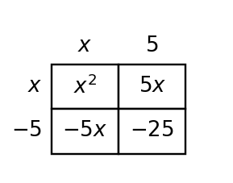

A source-grounded study guide for vocabulary, rules and relationships, section targets, representations, common misconceptions, and reasoning across DOK levels.
Unit at a Glance
What ties Unit 5 together?
Students will analyze polynomial structure, represent quadratic expressions in useful forms, solve for zeros, and interpret how factors connect to graphs and key features.
1Reveal factorsUse GCF and trinomial structure.
→
2Recognize patternsUse special products when structure fits.
→
3Connect zerosRead roots from factors and graphs.
→
4Choose a formUse standard, factored, or vertex form strategically.
Unit Vocabulary & Representations
Words and representations worth knowing cold
These source-supported terms and representation types organize the work across the unit.
5.1 GCF and Structure
Polynomial expressions in expanded formFactored expressions with greatest common factorsArea models for common-factor structureTables of term coefficients and variable powersVerbal contexts involving shared quantities
5.2 Factoring Trinomials
Standard-form quadratic trinomialsFactored binomial productsProduct-sum tablesAlgebra tiles or area modelsPartial-factor work showing structure
5.3 Special Factoring Patterns
Difference-of-squares expressionsPerfect-square trinomialsSquared binomial formsPattern templates using variables and coefficientsVisual square and rectangle models
5.4 Factored Form and Zeros
Factored quadratic functionsZeros and x-interceptsQuadratic graphsInput-output tables near interceptsContext statements involving break-even or height reaching zero
5.5 Comparing Quadratic Forms
Standard formVertex formFactored formQuadratic graphs with key features labeledContexts involving maximums, minimums, intercepts, and starting values
Rules, Forms & Relationships
The structures Unit 5 expects you to use
Use these relationships only in the situations where their structure applies. The section review below shows how they connect to representations and contexts.
Factor a GCF
$ab+ac=a(b+c)$
Remove the greatest common factor before looking for additional structure.
Monic trinomial
$x^2+bx+c=(x+m)(x+n)$
For integer factoring, choose $m,n$ so $m+n=b$ and $mn=c$.
Perfect-square trinomial
$a^2+2ab+b^2=(a+b)^2$
Recognize the square terms and twice-the-product middle term.
Difference of squares
$a^2-b^2=(a-b)(a+b)$
Two square terms separated by subtraction factor into conjugates.
Factored quadratic form
$y=a(x-r_1)(x-r_2)$
The zeros are visible as $x=r_1$ and $x=r_2$.
Vertex form
$y=a(x-h)^2+k$
Vertex form makes the vertex and axis of symmetry easy to read.
Standard form
$y=ax^2+bx+c$
Standard form makes the vertical intercept $c$ immediately visible.
Students will identify common factors and use structure to rewrite polynomial expressions.
I can…
I can construct equivalent polynomial expressions by factoring out a greatest common factor.
I can apply structure to rewrite polynomial expressions in a more useful form.
I can determine whether a rewritten expression is reasonable by checking common factors and equivalent products.
Summary
A greatest common factor is the largest factor shared by every term in an expression.
Factoring out the GCF rewrites a sum as a product, and distributing can check that the product is equivalent to the original expression.
Area models help connect a factored product to the terms inside the rectangle.
A factorization may multiply back correctly and still be incomplete if a common factor remains inside the parentheses.
GCF shown through area structure.
Key representations:Polynomial expressions in expanded formFactored expressions with greatest common factorsArea models for common-factor structureTables of term coefficients and variable powersVerbal contexts involving shared quantities
DOK 1
Recognize and interpret polynomial expressions in expanded form and the basic features used in this section.
DOK 2
apply structure to rewrite polynomial expressions in a more useful form
DOK 3
determine whether a rewritten expression is reasonable by checking common factors and equivalent products
DOK 4
Use area or array models to represent common factors.
Common traps to avoid
Factoring only a number
Why it is tempting: students see the coefficients first and ignore variable powers. What to check instead: check the numbers and the lowest power of each shared variable.
Forgetting a negative term
Why it is tempting: the minus sign feels separate from the term. What to check instead: keep each sign attached to its term while dividing by the GCF.
Stopping too soon
Why it is tempting: a smaller common factor gives a true product. What to check instead: look inside the parentheses for another common factor.
Changing the value
Why it is tempting: rewriting can feel like simplifying by deleting a factor. What to check instead: multiply back to verify every original term returns.
Students will factor quadratic trinomials using patterns, products, sums, and structure.
I can…
I can build factored forms of quadratic trinomials using product-sum relationships.
I can use patterns in coefficients and constants to factor quadratic trinomials.
I can predict missing factors or terms by extending product-sum reasoning.
Summary
A trinomial can be factored by finding products and sums that match its coefficients.
Diamond problems organize the product and sum conditions before a factored form is written.
Area models show how first, outside, inside, and last products combine into a trinomial.
When the leading coefficient is not 1, splitting the middle term can make the structure easier to factor correctly.
Trinomial factoring with an area model.
Key representations:Standard-form quadratic trinomialsFactored binomial productsProduct-sum tablesAlgebra tiles or area modelsPartial-factor work showing structure
DOK 1
Recognize and interpret standard-form quadratic trinomials and the basic features used in this section.
DOK 2
use patterns in coefficients and constants to factor quadratic trinomials
DOK 3
predict missing factors or terms by extending product-sum reasoning
DOK 4
Represent trinomials with area models before writing factors.
Common traps to avoid
Using only the product
Why it is tempting: a pair may multiply correctly but add incorrectly. What to check instead: check both the product and the sum before writing factors.
Ignoring the sign of c
Why it is tempting: positive and negative constants change possible pairs. What to check instead: list pairs with signs attached.
Guessing without checking
Why it is tempting: a binomial pair can look reasonable. What to check instead: multiply the factors back to confirm all three terms.
Forgetting to split b
Why it is tempting: students try simple factoring even when $a
e 1$. What to check instead: use $ac$ and the middle coefficient to organize the split.
Students will recognize and factor special polynomial patterns.
I can…
I can design a strategy for factoring special polynomial patterns.
I can apply difference-of-squares and perfect-square-trinomial patterns.
I can assess whether a polynomial fits a special factoring pattern before rewriting it.
Summary
Special factoring patterns are shortcuts that come from predictable multiplication structures.
Perfect-square trinomials have square first and last terms and a middle term equal to twice the product of the square roots.
A difference of squares has two square terms with subtraction and factors into conjugates.
A look-alike expression should be checked before a shortcut is used; otherwise the factorization may not multiply back correctly.

Difference-of-squares structure.
Key representations:Difference-of-squares expressionsPerfect-square trinomialsSquared binomial formsPattern templates using variables and coefficientsVisual square and rectangle models
DOK 1
Recognize and interpret difference-of-squares expressions and the basic features used in this section.
DOK 2
apply difference-of-squares and perfect-square-trinomial patterns
DOK 3
assess whether a polynomial fits a special factoring pattern before rewriting it
DOK 4
Create examples and nonexamples of special factoring patterns.
Common traps to avoid
Factoring a sum of squares
Why it is tempting: students see two squares and forget the sign. What to check instead: confirm the expression is a difference, not a sum.
Trusting square ends only
Why it is tempting: first and last terms may be squares while the middle term fails. What to check instead: check the middle term against twice the product.
Missing a GCF first
Why it is tempting: the special pattern may be hidden after a common factor. What to check instead: factor out the GCF before classifying.
Wrong conjugate signs
Why it is tempting: opposite signs are needed for cancellation. What to check instead: multiply to see whether the middle terms cancel.
Students will connect factors, zeros, intercepts, and graphs of quadratic functions.
I can…
I can formulate quadratic functions in factored form from zeros or intercepts.
I can use factored form to predict zeros and x-intercepts of quadratic graphs.
I can extend connections among factors, zeros, intercepts, and graph behavior.
Summary
Factored form makes zeros visible because each factor can be set equal to zero.
Zeros correspond to x-intercepts because both describe inputs where the output is 0.
A quadratic sketch should connect factors, intercepts, table values, and overall graph behavior.
In contexts, zeros must be interpreted using the quantities and units from the situation.
Zeros connected to a quadratic graph.
Key representations:Factored quadratic functionsZeros and x-interceptsQuadratic graphsInput-output tables near interceptsContext statements involving break-even or height reaching zero
DOK 1
Recognize and interpret factored quadratic functions and the basic features used in this section.
DOK 2
use factored form to predict zeros and x-intercepts of quadratic graphs
DOK 3
extend connections among factors, zeros, intercepts, and graph behavior
DOK 4
Write factored functions from graph intercepts.
Common traps to avoid
Using the factor as the zero
Why it is tempting: students see $x-4$ and write 4 or -4 without solving. What to check instead: set the factor equal to zero and solve carefully.
Mixing up intercepts
Why it is tempting: x-intercepts and y-intercepts both use 0. What to check instead: remember x-intercepts have output 0; y-intercept uses input 0.
Ignoring the multiplier
Why it is tempting: zeros stay the same but graph shape can change. What to check instead: separate factors from the outside multiplier.
Sketching a line
Why it is tempting: students focus only on intercepts. What to check instead: remember a quadratic graph is a parabola.
Students will compare standard, vertex, and factored forms of quadratic functions and determine which form best reveals key features.
I can…
I can construct equivalent quadratic forms to reveal different key features.
I can interpret standard, vertex, and factored forms to read key features of quadratic functions.
I can critique which quadratic form best supports a given question or context.
Summary
Equivalent quadratic forms represent the same relationship but reveal different features.
Factored form makes zeros and x-intercepts direct, while vertex form makes the vertex and maximum or minimum direct.
Standard form can make the y-intercept visible and supports expansion or coefficient comparisons.
Choosing a form should be based on the question being asked and the feature that needs to be interpreted.
Quadratic forms connected to graph features.
Key representations:Standard formVertex formFactored formQuadratic graphs with key features labeledContexts involving maximums, minimums, intercepts, and starting values
DOK 1
Recognize and interpret standard form and the basic features used in this section.
DOK 2
interpret standard, vertex, and factored forms to read key features of quadratic functions
DOK 3
critique which quadratic form best supports a given question or context
DOK 4
Choose the most useful form for a context-based question.
Common traps to avoid
Treating forms as different functions
Why it is tempting: the expressions look different. What to check instead: evaluate a few inputs or compare graphs to check equivalence.
Using the wrong form for the question
Why it is tempting: students use whichever form appears first. What to check instead: identify the needed feature before choosing a form.
Reading the vertex from standard form
Why it is tempting: the numbers are visible but not the vertex directly. What to check instead: rewrite or use a graph when the vertex is needed.
Forgetting context meaning
Why it is tempting: features are listed without units. What to check instead: translate zeros, vertex, and intercepts back into the situation.
Unit Mastery by DOK
A second way to organize the review
Sections tell you which topic you are reviewing. DOK tells you how deeply you need to use it.
DOK 1 · Recognize
Control notation and basic features
Recognize the key features and notation used in GCF and Structure.
Recognize the key features and notation used in Factoring Trinomials.
Recognize the key features and notation used in Special Factoring Patterns.
Recognize the key features and notation used in Factored Form and Zeros.
Recognize the key features and notation used in Comparing Quadratic Forms.
DOK 2 · Apply & Represent
Use procedures and representations
apply structure to rewrite polynomial expressions in a more useful form.
use patterns in coefficients and constants to factor quadratic trinomials.
apply difference-of-squares and perfect-square-trinomial patterns.
use factored form to predict zeros and x-intercepts of quadratic graphs.
interpret standard, vertex, and factored forms to read key features of quadratic functions.
DOK 3 · Reason & Critique
Use evidence to defend or revise
determine whether a rewritten expression is reasonable by checking common factors and equivalent products.
predict missing factors or terms by extending product-sum reasoning.
assess whether a polynomial fits a special factoring pattern before rewriting it.
extend connections among factors, zeros, intercepts, and graph behavior.
critique which quadratic form best supports a given question or context.
DOK 4 · Design & Synthesize
Build and connect models
Use area or array models to represent common factors.
Represent trinomials with area models before writing factors.
Create examples and nonexamples of special factoring patterns.
Write factored functions from graph intercepts.
Choose the most useful form for a context-based question.
Before the Summative
Can you do these without notes?
Vocabulary & Concepts
GCF and Structure
Factoring Trinomials
Special Factoring Patterns
Factored Form and Zeros
Comparing Quadratic Forms
Representations & Procedures
apply structure to rewrite polynomial expressions in a more useful form.
use patterns in coefficients and constants to factor quadratic trinomials.
apply difference-of-squares and perfect-square-trinomial patterns.
use factored form to predict zeros and x-intercepts of quadratic graphs.
interpret standard, vertex, and factored forms to read key features of quadratic functions.
Reasoning & Modeling
determine whether a rewritten expression is reasonable by checking common factors and equivalent products.
predict missing factors or terms by extending product-sum reasoning.
assess whether a polynomial fits a special factoring pattern before rewriting it.
extend connections among factors, zeros, intercepts, and graph behavior.
critique which quadratic form best supports a given question or context.
Strong Algebra work connects procedures to structure, checks representations against one another, and explains why the result fits the mathematical situation.